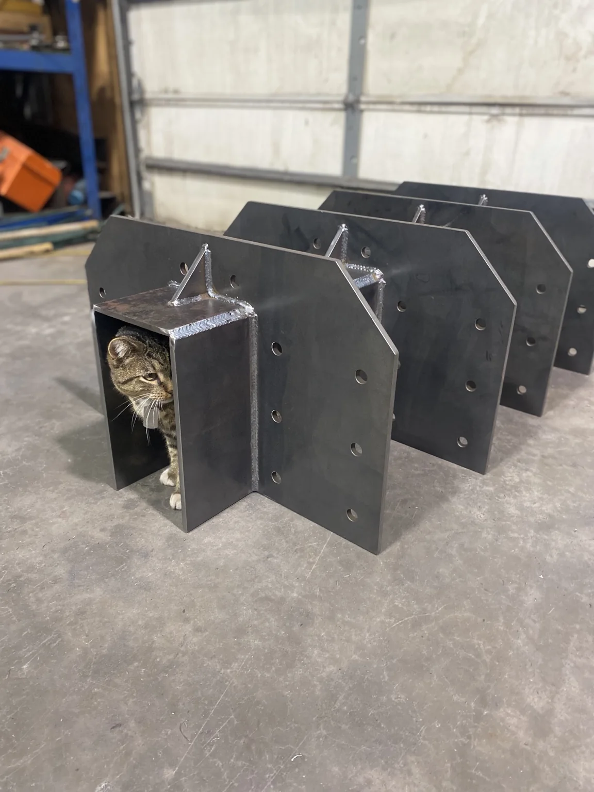
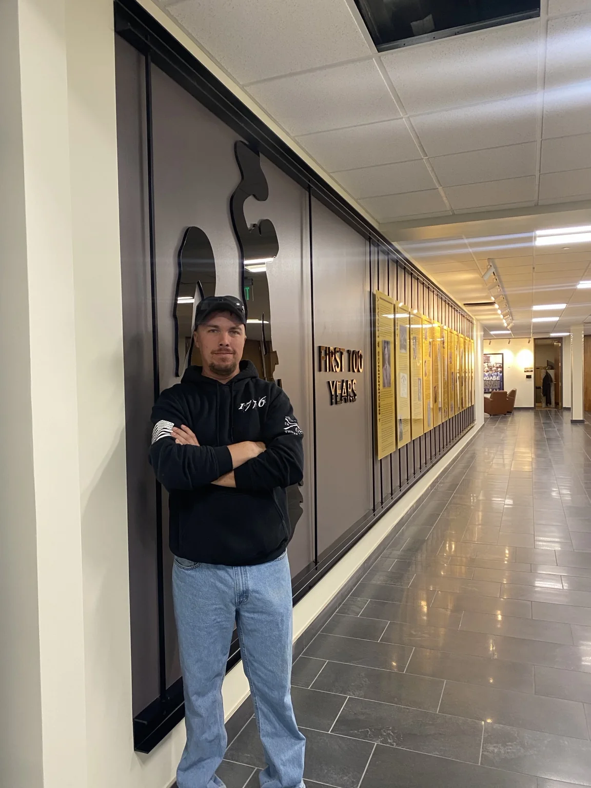
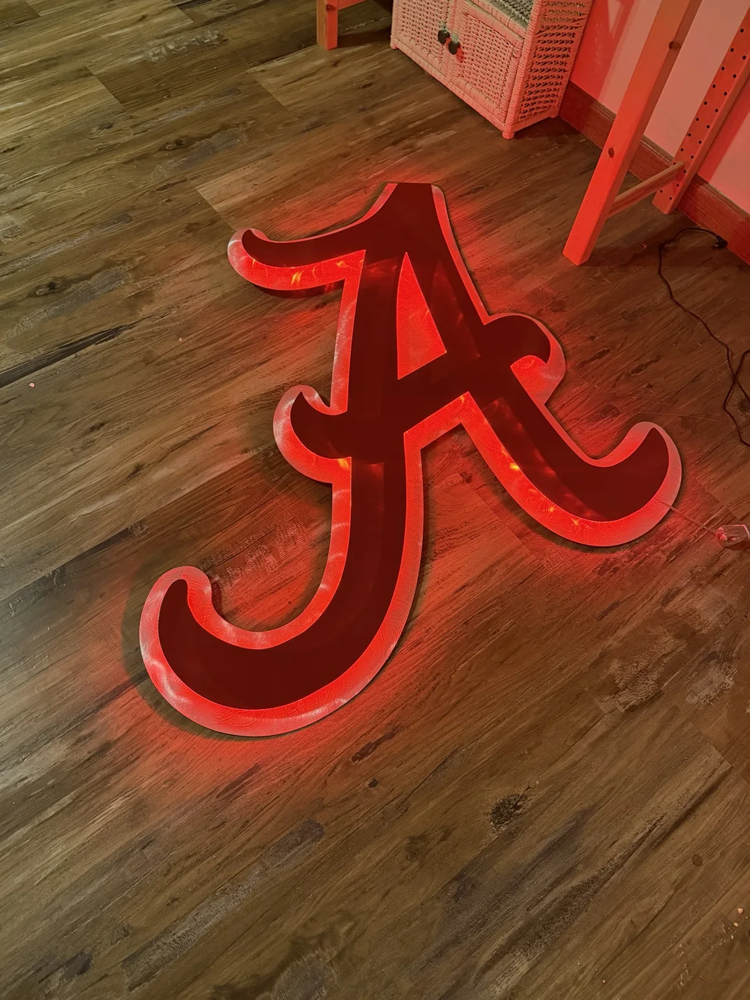
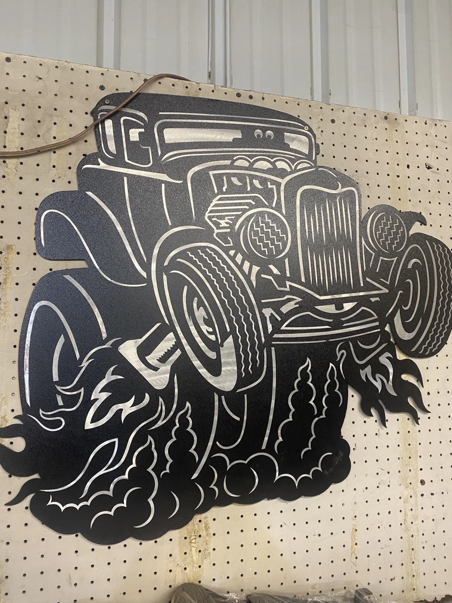
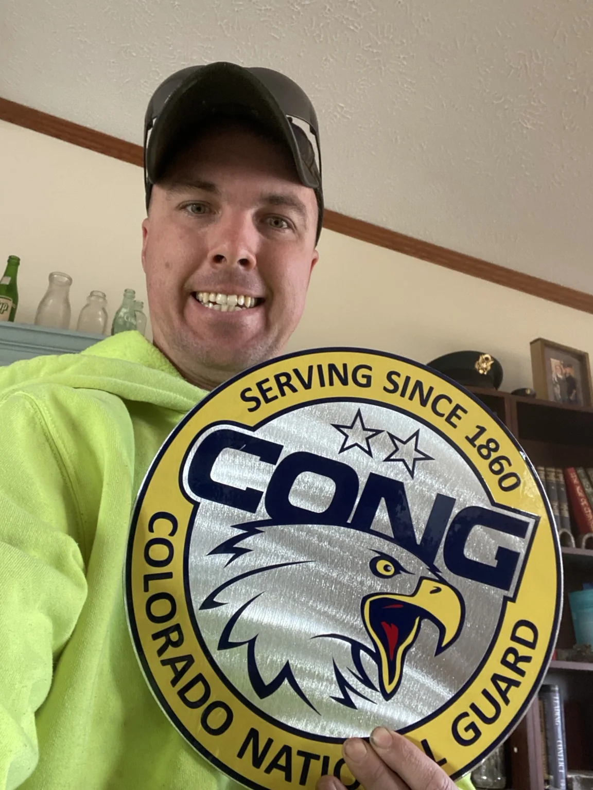
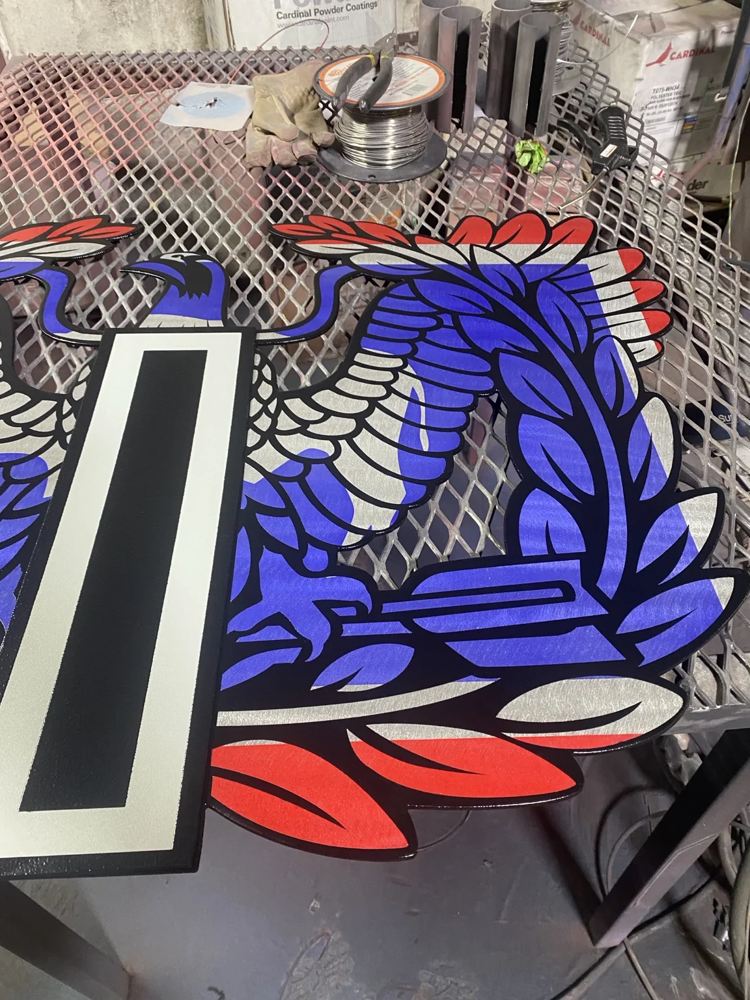
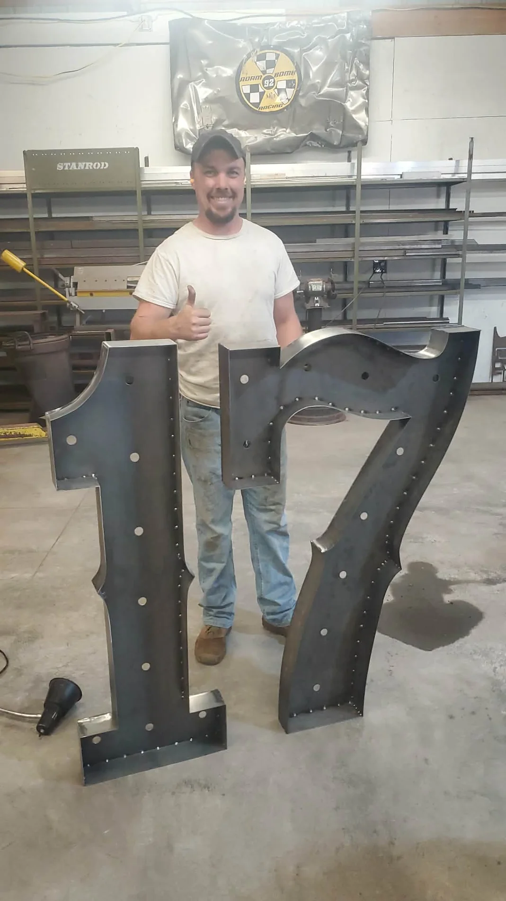

Real projects
Work from the shop and the field
Every image here is an actual Stanrod project. The captions tell the real story behind the work instead of guessing from the photograph.
Contractor and commercial
Built for real sites, loads, and deadlines
Installed work has to fit the place it is going, survive the conditions, and often meet a schedule that does not care how complicated the fabrication is.






Homeowner, art, and custom work
Built for one place, one person, or one idea
One-off work can be functional, decorative, personal, or all three at once.





Recognition and commemorative work
Pieces made for a reason
Some commissions mark service, achievement, retirement, or a family story. The meaning behind the piece is part of the job.





Repair, field work, and shop life
The problem-solving side of fabrication
Some jobs arrive as a drawing. Others arrive broken, oversized, remote, or not completely understood until the work begins.